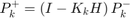

Contents
Introduction
% This is an example MATLAB script designed to show an example of using a % Kalman Filter (KF) to filter noisy data from a plane flying past a % ground-based RADAR installation. % % The example is partially based on the tutorial here: % <https://www.intechopen.com/chapters/63164> % and the example in Chapter 3 of Optimal Filtering % <https://www.google.com.au/books/edition/Optimal_Filtering/iYMqLQp49UMC?hl=en> % % The scenario is that a ground-based RADAR is positioned at the origin and % a plane is flying past at relatively low speeds and is modelled as moving % at a velocity v0 with random accelerations governed by a zero-mean % Gaussian noise model %
Definitions:
Our process model is
where * F is the state transition matrix * x is the state vector * w is a zero mean Gaussian with covariance Q (i.e. )
Our measurement model is
where
- zk is the measurement vector
- H is the output/measurement matrix
- vk is the measurement noise ()
Our state vector captures the positions and velocities of the plane:
The covariance of the estimate is given by . Hats indicate estimates
Kalman Filter Equations
Predicted State Estimate:
Predicted Error Covariance:
Measurement residual:
Kalman gain:
Updated State estimate:
Updated error covariance: 
Setup
clear; clc; rng(2);
Set simulation parameters
% Boxsize of simulation [m] bs = 100; % Length of simulation [s] tmax = 100; % Number of steps n_steps = 1000; % std of measurement model sigma_xyz = 5; % std of acceleration in process model sigma_a = 0.1; % Velocity of plane [m/s] v0 = bs/tmax; % Initial position of plane x = [ bs/4; 0; bs/1; -v0; bs/4; 0; ]; dt = tmax/n_steps; t = linspace(0, tmax, n_steps);
Set up KF model
% Generate the matrices needed for the filter and process F = get_F(dt); Q = get_Q(dt, sigma_a); H = get_H(); R = get_R(sigma_xyz); I = eye(6); % Prior state estimate x_hat = x(:); % Prior covariance estimate P_hat = eye(6);
Main loop
ground_truth = zeros(6, n_steps); state_estimates = zeros(6, n_steps); measurements = zeros(3, n_steps); mu_process = zeros(6, 1); mu_measure = zeros(3, 1); for k = 1:n_steps % Find the ground truth results wk = mvnrnd(mu_process, Q)'; vk = mvnrnd(mu_measure, R)'; x = F * x + wk; z = H * x + vk; % Filter estimates % Prediction step (a priori estimate) x_hat = F * x_hat; P_hat = F * P_hat * F' + Q; % Update step % Measurement residual y_t = z - H * x_hat; % Kalman gain K = P_hat * H' / (R + H * P_hat * H'); % Updated state estimate (a posteriori estimate) x_hat = x_hat + K * y_t; P_hat = (I - K * H) * P_hat; % Record results ground_truth(:, k) = x; measurements(:, k) = z; state_estimates(:, k) = x_hat; end
Post-processing
gt_pos = H * ground_truth; est = H * state_estimates; err = sqrt(sum((est - gt_pos).^2, 1)); moverr = movmean(err, 50);
Plot the 3D environment
f = figure(1); hold on; plot3(0, 0, 0, 'ro') plot3(gt_pos(1, :), gt_pos(2, :), gt_pos(3, :), 'b-') plot3(est(1, :), est(2, :), est(3, :), 'g-') plot3(measurements(1, :), measurements(2, :), measurements(3, :), 'r.') axis equal; legend("Radar", "Flight path", "Estimate", "Measurements") title("Path of object in relation to RADAR"); xlabel("x [m]"); ylabel("y [m]"); zlabel("z [m]"); grid on; hold off; % saveas(f, "./figs/flight_path.png")
Plot the error
g = figure(2); hold on; plot(t, err) plot(t, moverr) legend("Error", "Moving mean of error"); title("Error in KF Model"); xlabel("Time [s]"); ylabel("Error [m]"); grid on; hold off; % saveas(g, "./figs/model_error.png")
Helper functions
function F = get_F(dt) F = [ 1, dt, 0, 0, 0, 0; 0, 1, 0, 0, 0, 0; 0, 0, 1, dt, 0, 0; 0, 0, 0, 1, 0, 0; 0, 0, 0, 0, 1, dt; 0, 0, 0, 0, 0, 1; ]; end function Q = get_Q(dt, sigma_m) G = [ 1/2 * dt ^ 2; dt; 1/2 * dt ^ 2; dt; 1/2 * dt ^ 2; dt; ]; Q = G * G' * sigma_m ^ 2; end function H = get_H() H = [ 1, 0, 0, 0, 0, 0; 0, 0, 1, 0, 0, 0; 0, 0, 0, 0, 1, 0; ]; end function R = get_R(sigma_xyz) R = zeros(3, 3); R(1, 1) = sigma_xyz ^ 2; R(2, 2) = sigma_xyz ^ 2; R(3, 3) = sigma_xyz ^ 2; end